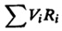
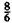

Notice that the utilization of the delay center represents the mean number of jobs receiving service and does not need to be less than 1.
All equations to analyze open systems are summarized in Box 34.1.
- Example 34.1 Figure 32.1 shown earlier represents a queueing model of a file server consisting of a CPU and two disks, A and B. Measurements on a distributed system with six clients systems making requests to the file server produced the following data:
- Observation interval = 3600 seconds
- Number of client requests = 10,800
- CPU busy time = 1728 seconds
- Disk A busy time = 1512 seconds
- Disk B busy time = 2592 seconds
- Number of visits (I/O requests) to disk A = 75,600
- Number of visits (I/O requests) to disk B = 86,400
Based on these observations, we can compute the service demands and visit ratios as follows:
- X = throughput = 10,800/3600 = 3 client requests per second
- VA = 75,600/10,800 = 7 visits per client request to disk A
- VB = 86,400/10,800 = 8 visits per client request to disk B
- VCPU 1 + 7 + 8 = 16 visits per client requests to CPU
- DCPU 1728/10,800 = 0.16 second of CPU time per client request
- DA = 1512/10,800 = 0.14 second of disk A time per client request
- DB = 2592/10,800 = 0.24 second of disk B time per client request
- SCPU = 0.16/16 = 0.01 second per visit to CPU
- SA = 0.14/7 = 0.02 second per visit to disk A
- SB = 0.24/8 = 0.03 second per visit to disk B
We now have all the input parameters required to analyze the system.
Device utilizations using the utilization law are
- UCPU = XDCPU = 3 × 0.16 = 0.48
- UA = XDA = 3 × 0.14 = 0.42
- UB = XDB = 3 × 0.24 = 0.72
The device response times using Equation (34.2) are
RCPU = SCPU/(1 – UCPU) = 0.01/(1 – 0.48) = 0.0192 second
RA = SA/(1 – UA) = 0.02/(1 – 0.42) = 0.0345 second
RB = SB/(1 – UB) = 0.03/(1 – 0.72) = 0.107 second
Server response time R =  = 16 × 0.0192 + 7 × 0.0345 + 8 × 0.107
= 1.406 seconds
The model can be used to answer some of the typical questions. For example, we might want to quantify the impact of the following changes:
- 1. Increase the number of clients to 8.
- 2. Use a cache for disk B with a hit rate of 50%, although it increases the CPU overhead by 30% and the disk B service time (per I/O) by 10%.
- 3. Have a lower cost server with only one disk (disk A) and direct all I/O requests to it.
The first question can be answered if we assume that the new clients make requests similar to those measured. The request arrival rate will go up by a factor of . Since the arrival rate was three requests per second, with more clients it will become four requests per second. The new analysis is as follows:
- X = 4 requests/second
- UCPU = XDCPU = 4 × 0.16 = 0.64
- UA = XDA = 4 × 0.14 = 0.56
- UB = XDB = 4 × 0.24 = 0.96
- RCPU = SCPU/(1 – UCPU) = 0.01/(1 – 0.64) = 0.0278 second
- RA = SA/(1 – UA) = 0.02/(1 – 0.56) = 0.0455 second
- RB = SB/(1 – UB) = 0.03/(1 – 0.96) = 0.75 second
- R = 16 × 0.0278 + 7 × 0.0455 + 8 × 0.75 = 6.76 seconds
Thus, if the number of clients is increased from 6 to 8, the server response time will degrade by a factor of 6.76/1.406 = 4.8.
The second question requires changing VB, SCPU, and SB as follows:
- VB = 0.5 × 8 = 4
- SCPU = 1.3 × 0.01 = 0.013 ⇒ DCPU = 0.208 second
- SB = 1.1 × 0.03 = 0.033 ⇒ DB = 4 × 0.033 = 0.132 second
The analysis of the changed systems is as follows:
- UCPU = XDCPU = 3 × 0.208 = 0.624
- UA = XDA = 3 × 0.14 = 0.42
- UB = XDB = 3 × 0.132 = 0.396
- RCPU = SCPU/(1 – UCPU) = 0.013/(1 – 0.624) = 0.0346 second
- RA = SA(1 – UA) = 0.02/(1 – 0.42) = 0.0345 second
- RB = SB/(1 – UB) = 0.033/(1 – 0.396) = 0.0546 second
- R = 16 × 0.0346 + 7 × 0.0345 + 4 × 0.0546 = 1.013 seconds
Thus, if we use a cache for disk B, the server response time will improve by (1.406 – 1.013)/1.406 = 28%.
The third question requires adjusting VA and VB. We assume that there is enough space on disk A to be able to accommodate all files on both disks. The analysis is as follows:
- VB = 0
- VA = 7 + 8 = 15
- DCPU = 0.16 second (as before)
- DA = 15 × 0.02 = 0.3 second
- UCPU = XDCPU = 3 × 0.16 = 0.48
- UA = XDA = 3 × 0.3 = 0.90
- RCPU = SCPU/(1 – UCPU) = 0.01/(1 – 0.48) = 0.0192 second
- R = SA/(1 – UA) = 0.02/(1 – 0.90) = 0.2 second
- R = 16 × 0.0192 + 15 × 0.2 = 3.31 seconds
Thus, if we replace the two disks by one, the server response time will degrade by a factor of 3.31/1.406 = 2.35.